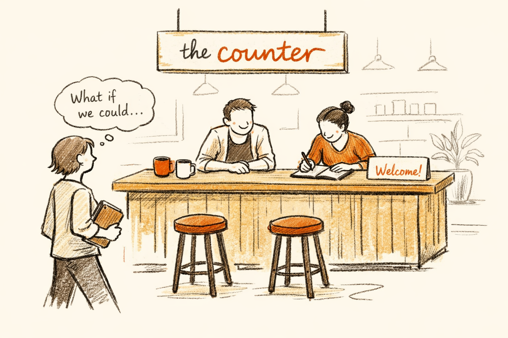
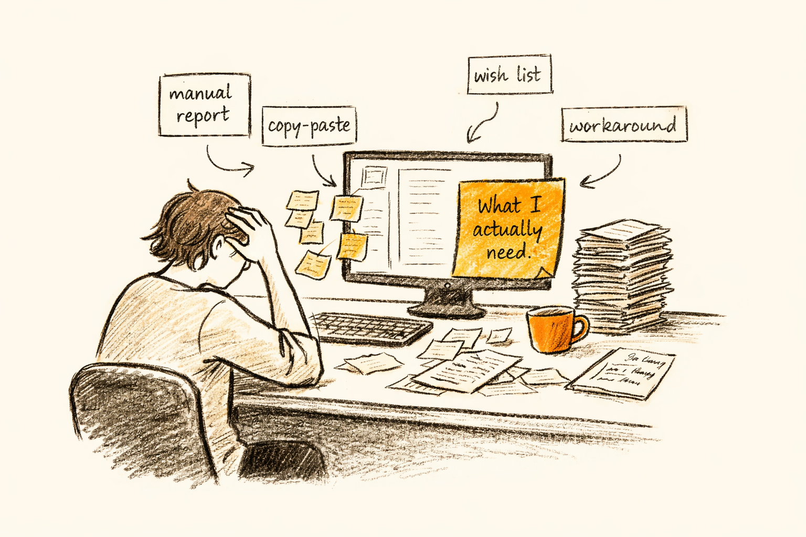
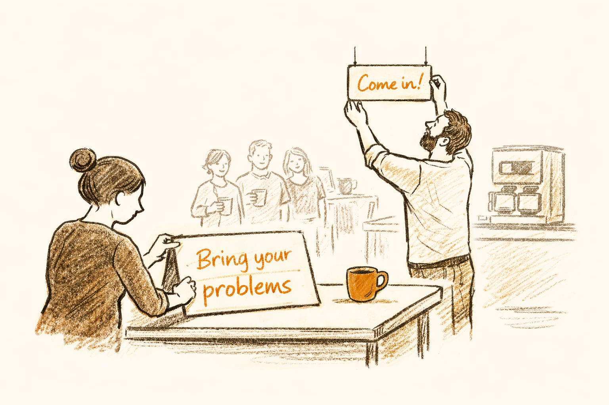
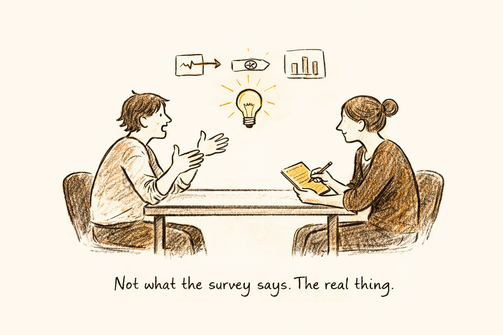

An experience, not a presentation
We set up inside your organization. Your teams bring us the real problems in their work. We listen, we build, and we show them what AI can actually do with their expertise.


The starting point
The report that takes a week. The data that never connects. The feature they've been requesting for three years. Your people know exactly what's broken in their work — they just stopped believing anyone would fix it.
"This is the expertise you've been sitting on."

The approach
A conference room, a lounge, a literal coffee bar. It feels approachable — not like a corporate training event. We announce it with a simple ask: think about the problems in your workflow, the things that slow you down. Then come talk to us.
"Think office hours — except you leave with something real."

The conversation
Not what showed up on a survey. Not what their manager thinks is the priority. The real thing — the workaround they've been living with for years, the report that takes a week, the data that never connects. One by one, they sit down and tell us.
"This is where the real signal lives."
The build
Not slide decks. Working prototypes. Functional tools people can see, touch, and interact with — built directly from the problems they told us about. Things that are nearly impossible to convey in a presentation suddenly become real and clickable.
"Real problems → working tools. Hours, not months."
The reveal
Same day or within the week. We walk through working prototypes with the people who brought us the problems. Not a presentation — a live demo of their own ideas made real. We capture their honest reactions and what it would mean for the business if this existed at scale.
"This is where the real conversation starts."
The insight
The problems people bring, the prototypes we build, the reactions we capture — they become the foundation for what your organization should actually be building. Not a strategy deck from consultants. A roadmap that starts from the ground up, defined by the people who do the work.
"Starting from the ground up to define what technology should do for your people."
People don't learn to use AI by sitting in a workshop. They learn when it's applied to the thing they've been trying to solve for the last six months — and suddenly, it takes an afternoon.The premise behind everything we do
What You Walk Away With
Functional examples built from your team's actual problems. Not generic demos — real tools that address real gaps, built in hours.
Direct reactions from the people closest to the work — what they'd do differently, how impactful it would be. The kind of insight no survey captures.
The highest-impact opportunities across your teams — grounded in their expertise. The beginning of a roadmap that actually makes sense.
How Fast
Lightweight, low-commitment, and immediately valuable.
Align on which teams and problems to target. Craft the internal announcement.
The Counter goes live. We're on-site listening, capturing, and building alongside your people.
Deliver prototypes back to individuals. Present findings and opportunities to leadership.
Synthesize insights into a clear opportunity map. Define what to build first — and why.
The Counter gives you something most organizations never get: a grounded, evidence-based starting point. Real problems, real prototypes, real reactions from the people who do the work.
From here, we can help you set a strategic direction and embed with your teams long-term.
Read our full perspective →Tell us about your organization and we'll have a Counter planned and ready in weeks — no long-term commitment required.
Set Up a Counter →